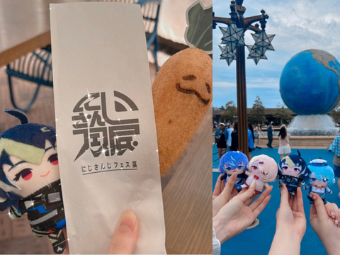
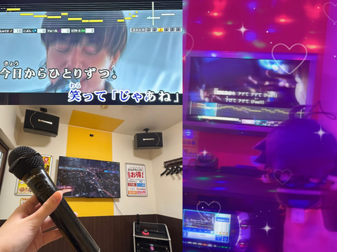
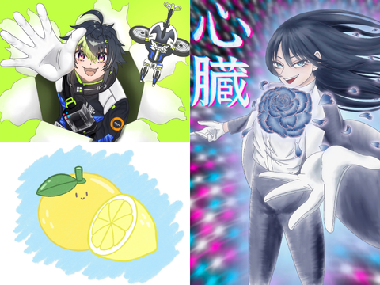
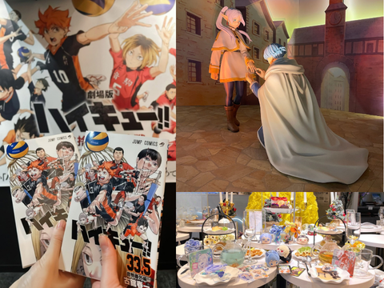

Vtuber

配信や動画を見るのが日々の楽しみのひとつです。知らなかった新しいものに出会えることが嬉しいです。

さとうゆら
2005年5月26日 北海道苫小牧市生まれ。
中学・高校時代に韓国アイドルやアニメに夢中になったことをきっかけに、SNSを使う機会が増え、気がつけば日常に欠かせない存在になっていました。高校卒業後にはVtuberにも興味を持つようになり、情報収集をする中で、音楽やファッション、コスメ、日用品など、自分だけでは出会えなかったさまざまなものを知るようになりました。SNSを通して新しいものに出会い、興味が広がった経験から、SNSが持つ影響力に魅力を感じています。また、同じものが好きな人との交流を通して、自分が知らなかったことを知ったり、共通の話題が増えたりすることで、日常がより楽しくなることも実感しました。
幼い頃から絵を描いたり、ものをつくったりすることが好きで、「いつかデザイナーになりたいな」と考えていた子ども時代でした。
その後、一度は歯科衛生士を目指して専門学校へ進みましたが、実習を経験する中で、自分がこれからどんな仕事をしたいのかを改めて考えるようになりました。そこで思い出したのが、昔から好きだった「ものをつくること」でした。
その際に、SNSを見る中でWebデザインや広告デザインという仕事を知ったこともきっかけとなり、デザインへの興味が再び強くなりました。そして、自分が本当にやりたいことに向き合い、現在は専門学校でWebデザインやSNS、マーケティングについて学んでいます。
さらに現在インターンシップでは、実際にSNSコンテンツの制作に携わり、これまで何気なく見ていた投稿にも、動画の構成やテンポ、デザインなど、さまざまな工夫があることに気づきました。制作を重ねる中で少しずつ感覚を掴み、自分の成長を実感できることにも楽しさを感じています。
同じ商品やコンテンツでも、写真や動画の見せ方、言葉の選び方、流行の取り入れ方など、工夫次第でより魅力的に見せ、多くの人に届けられることに面白さを感じています。
また、統一された世界観を持ちながらも新しいことに挑戦し、見る人を飽きさせずに惹きつける発信にも魅力を感じています。
だからこそ、デザインだけ、SNSだけ、マーケティングだけと分けて考えるのではなく、それぞれを一つにつなげて考えたいです。商品やサービスの魅力を伝えるだけでなく、私がつくったものをきっかけに「知りたい」「行ってみたい」「使ってみたい」と思ってもらえるような、見る人の行動につながるものをつくることを目指しています。

配信や動画を見るのが日々の楽しみのひとつです。知らなかった新しいものに出会えることが嬉しいです。

音楽を聴くのも、カラオケで歌うのも好きです。知っている曲を聴くと思わず口ずさんでしまいます。

小さい頃から絵を描くことが好きでした。描きたいと思ったものを自由に描くのが好きです。

気になる作品を見つけると一気にハマります。同じ作品を好きな人を見つけると嬉しくなります。